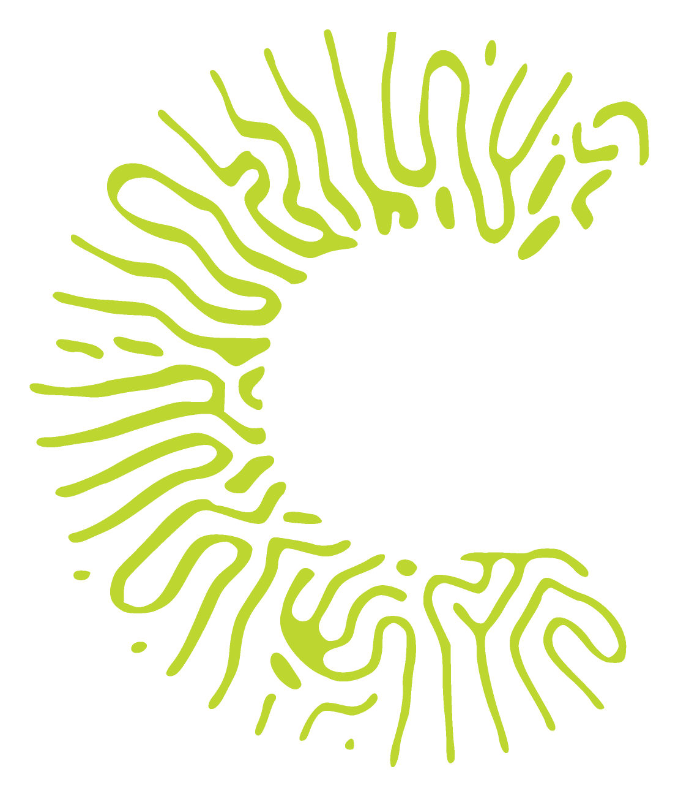

Know
what you have

Most organizations already have the knowledge they need to grow. The problem is it stays hidden, siloed, or unused. We help you change that.
The Clear Up path
what you have
from where you are
with it
The problem
Teams and partners each hold part of the picture. Decisions get made on incomplete information because nobody sees the whole thing.
Critical knowledge sits in documents, in people's heads, or in past projects. Undocumented, unused, invisible to the people who need it.
New ideas get killed before they scale. Core operations resist change. Running today and building tomorrow feels like an impossible tradeoff.
Three ways we work with you
Every engagement starts with a diagnostic. We map what is happening, show you the gaps, and work with you to close them.
How we work
Interviews and workshops to understand how knowledge flows today and where it breaks down.
A visual map of your knowledge strengths, gaps, and the connections that need attention.
We identify the two or three changes with the greatest impact and explain exactly why.
We work alongside your team to implement, track progress, and adjust as things evolve.
Who we work with
You are running the core business while trying to build new growth in sustainability, digitalization, or new markets. Teams are siloed. Priorities compete. The knowledge that could connect today to tomorrow is there — but it is not being used.
You bring together partners, suppliers, startups, and institutions toward a shared goal. Everyone contributes knowledge but it rarely gets integrated. Insights stay trapped inside individual organizations instead of becoming shared capability.
You move fast. But as you grow, knowledge gets lost. What worked and why goes undocumented. Lessons from partnerships never get shared. The foundations that let you scale without losing what made you good are not yet there.
You design transformation programs in digitalization, sustainability, or innovation. But each new program starts from scratch. What past initiatives already learned rarely feeds into the next one. Hard-won knowledge simply does not get reused.
Every engagement starts with a diagnostic. Let's map what your organization already knows — and turn it into momentum.